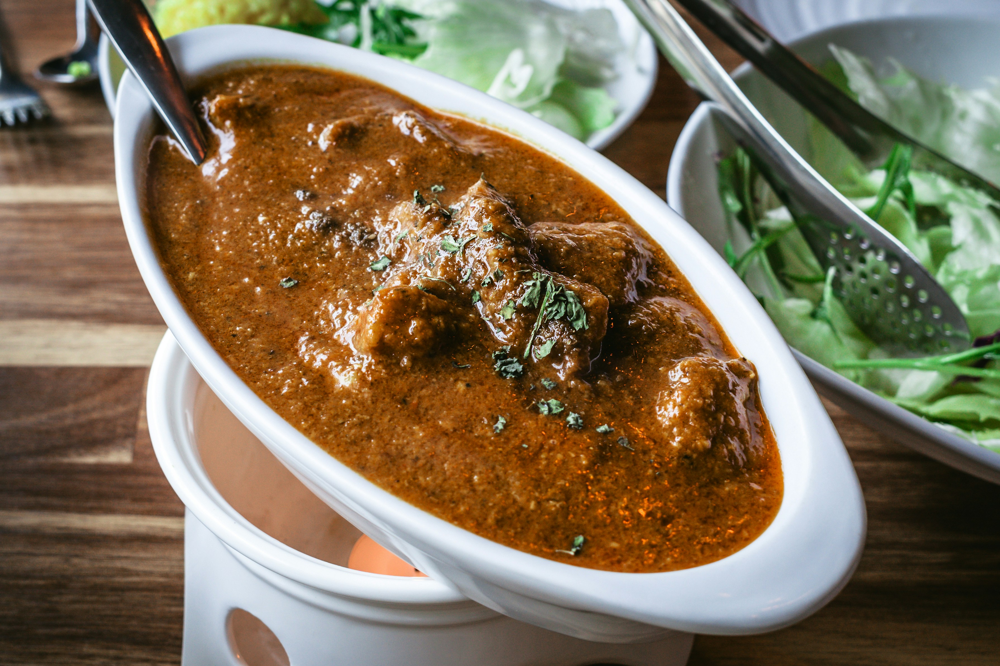

Curry

Beef Curry
Beef curry is a savory, slow-cooked or pressure-cooked dish featuring tender chunks of beef simmered in a spiced onion-tomato or coconut milk gravy.
Ingredients
- Beef: 1 kg (2.2 lbs) beef chuck roast or stewing beef, cut into 1-inch cubes
- Turmeric powder: ½ teaspoon
- Chili powder: 1 teaspoon (adjust to taste)
- Salt: 1 teaspoon
- Oil: 3 tablespoons (vegetable, canola, or coconut oil)
- Whole Spices: 1 cinnamon stick, 3 green cardamom pods, 3 cloves
- Onions: 2 large, finely chopped
- Ginger-Garlic Paste: 2 tablespoons
- Tomatoes: 2 medium, finely chopped (or ½ cup tomato puree)
- Coriander powder: 2 teaspoons
- Cumin powder: 1 teaspoon
- Garam Masala: 1 teaspoon
- Black Pepper: ½ teaspoon (freshly ground)
- Water or Beef Stock: 1 to 1.5 cups
- Fresh Coriander (Cilantro): A handful, chopped for garnish
Steps
-
Marinate the beef: Mix the beef cubes with the turmeric, chili powder, and salt in a bowl. Let it sit at room temperature for 15–20 minutes while you prep the other ingredients.
-
Sear the meat: Heat 1 tablespoon of oil in a heavy-bottomed pot or Dutch oven over medium-high heat. Brown the beef in batches so you don't crowd the pan (about 2–3 minutes per side). Remove the beef and set it aside on a plate, keeping the juices.
-
Sauté the aromatics: Lower the heat to medium and add the remaining 2 tablespoons of oil to the same pot. Toss in the whole spices (cinnamon, cardamom, cloves) and let them sizzle for 30 seconds. Add the chopped onions and cook for 8–10 minutes until they turn a deep golden brown. Stir in the ginger-garlic paste and cook for another minute until fragrant.
-
Build the masala: Add the chopped tomatoes. Cook for 5 minutes, mashing them down until they soften and the oil begins to separate from the mixture. Turn the heat to low and stir in the coriander powder, cumin powder, garam masala, and black pepper. Toast the spices for 1 minute, stirring constantly so they don't burn.
-
Simmer and slow-cook: Return the browned beef and its juices back into the pot. Stir well to coat the meat completely in the spice paste. Pour in the water or beef stock and bring it to a boil.
-
Tenderize the beef: Cover the pot tightly with a lid, turn the heat down to low, and let it simmer gently for 1.5 to 2 hours. Stir occasionally. The curry is ready when the beef is completely fork-tender and the gravy has thickened to your liking.
-
Garnish and serve: Taste and add more salt if needed. Turn off the heat, stir in the fresh chopped coriander, and let it rest for 5 minutes before serving.
Odin Recipes